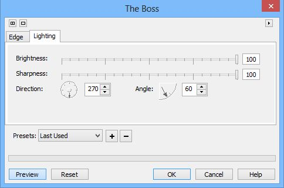
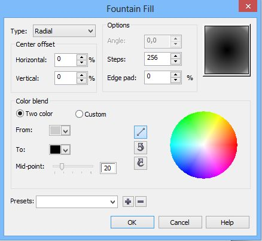

Cоздания сенсорного планшета в Photo-Paint X5
1. Создайте новый документ размером 1200 х 1400 px и разрешением 150 dpi. В качестве цвета фона установите светло-серый цвет: R: 234 G: 234 B: 234.
2. Выберите инструмент Rectangle tool (Прямоугольник), нажав клавишу F6. На Панели свойств инструмента, в счетчике Outline width (Толщина абриса) установите значение равное 10, а в счетчике Corner Size (Размер угла) – 60. Щелкните кнопку Disable fill (Выключить заливку), чтобы отключить заливку. В качестве цвета краски выберите 80 % черного. Нарисуйте прямоугольник с желаемыми размерами планшета, я задал размер 830 х 1046 px.
3. Разместите прямоугольник по центру документа, нажав комбинацию клавиш Ctrl + Shift + A, чтобы вызвать диалоговое окно Align and Distribute (Выровнять и Распределить). В диалоговом окне установите переключатель в положение To Center of Document (По центру документа) (рис. 1).

4. Выполните команду Effects > 3D Effects > Emboss (Эффекты > Трехмерные эффекты > Рельеф) (рис. 2).
5. Выберите инструмент Drop Shadow (Тень), нажав клавишу S. На Панели свойств, в раскрывающемся списке Preset (Заготовка) выберем вариант Medium Glow. В указателе цвета Shadow color (Цвет тени) выбираем черный. В списке Shadow direction (Направление тени) задаем значение 70 градусов. В счетчике Shadow offset (Смещение тени) устанавливаем значение равным 3, а в счетчике Shadow feathering (Размытие тени) равным 4. В раскрывающемся меню Feathering direction (Направление размытия) выбираем пункт Average (Усредненное) (рис. 3).
6. Выполните команду Effects > 3D Effects > Emboss (Эффекты > Трехмерные эффекты > Рельеф). Включите переключатель Other (Другой) в области Emboss color (Цвет рельефа) и задайте в указателе цвета 10 % черного (рис. 4).
7. Нажмите Ctrl + M, чтобы создать из объекта маску. Потом выполните команду Effects > 3D Effects > Bevel Effect (Эффекты > Трехмерные эффекты > Эффект скоса) (рис. 5 и 6).
8. Нажмите Ctrl + R, чтобы удалить маску. Выполните команду Effects > 3D Effects > Emboss (Эффекты > Трехмерные эффекты > Рельеф). Включите переключатель Other (Другой) в области Emboss color (Цвет рельефа) и задайте в указателе цвета белый (рис. 7).
На этот момент наше изображение будет иметь вид, как на рис. 8.
9. Выберите инструмент Rectangle tool (Прямоугольник), нажав клавишу F6. На Панели свойств инструмента, в счетчике Outline width (Толщина абриса) установите значение равное 0, а в счетчике Corner Size (Размер угла) – 40. В качестве цвета заливки выберите темный цвет: R: 30 G: 30 B: 30 или для более быстрого выбора можно взять 90 % черного. Нарисуйте прямоугольник внутри рамки (рис. 9). У меня он получился размером 790х1010 px.
10. Теперь на Панели свойств инструмента Rectangle tool (Прямоугольник) в счетчике Outline width (Толщина абриса) установите значение равное 2. В качестве цвета краски установите белый цвет, а в качестве цвета заливки – черный. Нарисуйте точно такой же прямоугольник поверх, но на 4 px меньше. Перетащите его немного вверх (можно клавиатурой, чтобы перемещение было минимальным), чтобы была видна только нижняя часть предыдущего прямоугольника (рис. 10).
11. Теперь добавляем экран планшета с картинкой. Я выбрал картинку нашего любимого сайта (рис. 11).
12. Добавим кнопку «Home». Нарисуйте инструментом Ellipse (Эллипс) небольшой круг с толщиной конура равной 0. Цвет заливки значения не имеет. Нажмите Ctrl + M, чтобы создать маску. Нажмите G, чтобы активировать инструмент Interactive Fill (Интерактивная заливка). На Панели свойств в списке Fill type (Тип заливки) выберите тип заливки Linear. Залейте прямоугольник. Начальный цвет заливки: R = 16; G = 36; B = 47. Конечный цвет заливки – 70 % черного.
После этого переключитесь на инструмент Rectangle tool (Прямоугольник). Установите цвет краски – белый, а на Панели свойств нажмите кнопку Disable fill (Выключить заливку), чтобы отключить заливку и установите в счетчике Outline width (Толщина абриса) значение равное 2. Нарисуйте прямоугольник поверх созданной окружности. Нажмите Ctrl + M, чтобы создать маску. Выполните команду Effects > 3D Effects > The Boss (Эффекты > Трехмерные эффекты > Бобышка) и установите значения, как на рис. 12 и 13.

Наше изображение теперь станет, как на рис. 14.
13. Теперь добавим камеру. Нарисуйте 3 окружности, одна поверх другой. Нижнюю залейте 80 % черного, вторую залейте цветом R: 38 G: 25 B: 99, а верхнюю черным цветом. Ко второй окружности можете применить эффект по своему усмотрению, чтобы создавалась иллюзия линзы. У меня получилось, как на рис. 15.
14. Создадим что-то наподобие блика на планшете. Для этого выберите инструмент Freehand Mask (Маска свободной формы), нажав клавишу К. Создайте треугольную маску, примерно как на рис. 16.
В докере Objects (Объекты) создайте новый объект нажав кнопку New Object (Новый объект). Этот новый объект должен быть поверх остальных объектов и выделен в докере. Теперь выберите инструмент Interactive Fill (Интерактивная заливка) нажав клавишу G. На Панели свойств в списке Fill type (Тип заливки) выберите тип заливки Linear. Залейте выделенную область. Начальный цвет заливки – R: 0 G: 0 B: 255, а конечный R: 0 G: 204 B: 255 (рис. 17).
В докере Objects (Объекты) задайте объекту прозрачность 45 %. Дополнительно к этому используем инструмент Object Transparency (Прозрачность объекта). На Панели свойств, в счетчике Transparency (Прозрачность) установите начальное значение прозрачности 10, а конечное 60 (рис. 18).
Нажмите кнопку Apply changes (Применить изменения). Придадим более нейтральный цвет блику с одновременным «осветлением». Для этого используем фильтр Lens Flare (Блик объектива). Выполните команду Effects > Camera > Lens Flare (Эффекты > Камера > Блик объектива). Настройки фильтра на рис. 19 и 20.
Теперь маску можно удалить.
Прежде, чем продолжить дальше, скажу, что блик вы можете сделать сами и способом отличным от моего. Это дело вкуса и предпочтений.
15. Я предпочел не вертикальное положение планшета, а горизонтальное, поэтому развернул его на 90 градусов против часовой стрелки: Image > Rotate > 90° Counterclockwise (Изображение > Поворот > 90 градусов против часовой стрелки). Теперь у нас изображение стало, как на рис. 21.
16. Добавим нашему планшету кнопки с помощью инструмента Rectangle tool (Прямоугольник). Установите толщину контура равной 0, а цвет заливки R: 48 G: 48 B: 48 (рис. 22).
17. Чтобы сделать тень для планшета, нарисуйте эллипс. Задайте прозрачность 85 %. Затем создайте маску, нажав Ctrl + M. Нажмите клавишу F, чтобы выбрать инструмент Fill (Заливка). На Панели свойств инструмента Fill (Заливка) щелкните кнопку Fountain (Фонтанная), а затем кнопку Edit fill (Изменить заливку). В диалоговом окне Fountain Fill (Фонтанная заливка) сделайте настройки, как на рис. 23.

В указателе цвета From (От) установите цвет 20 % черного, а в указателе цвета To (К) – черный цвет. Обратите внимание, что ползунок Mid-point (Центр) установлен на значение 20.
Подгоните размеры эллипса и разместите его позади планшета, затем выполните команду Effects > Blur > Gaussian Blur (Эффекты > Размытость > Размытость по Гауссу). В диалоговом окне, с помощью ползунка установите значение параметра Radius (Радиус) равным 8 (рис. 24).
18. Осталось добавить последний штрих – отражение планшета. Для этого объедините все объекты между собой, кроме тени. Нажмите Ctrl + D, чтобы получить дубликат планшета. Выполните команду Object > Flip > Vertically (Объект > Перевернуть > По вертикали). Затем создайте узкую прямоугольную маску. При выделенном дубликате планшета выполните команду Object > Clip Mask > Create > From Mask (Объект > Маска обрезки > Создать > Из маски). Придайте полученному объекту размер и форму. Уменьшите прозрачность до 33 %. Дополнительно можно размыть по Гауссу с небольшим значением радиуса. Наш планшет готов (рис. 25).


Мне одному кажется что такие вещи лучше делать всётаки в векторном редакторе? :D
Sancho! Дык это ж такое дело... можно делать где хошь, хоть на бумаге ;-) Вопрос не в том, в какой проге лучше сделать, а в том, как это сделать в данной конкретной программе ;-).
Baryga88, да я понимаю, просто решил немного потроллить :D